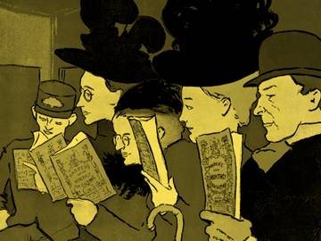

Novela Policiaca
La novela policiaca es un género narrativo que se caracteriza por tener una línea con lector a la resolución de un crimen. La novela policiaca se consolidó en el siglo X ductora en el relato cargada de indicios, rastros y signos encargados de conducir a en Europa; sin embargo, sus orígenes y bases se establecen gracias a los cuentos de misterio y terror del norteamericano Edgar Allan Poe. En Latinoamérica, este género se impuso con fuerza hasta la segunda mitad del siglo XX.
El motivo o tema principal de las novelas policiacas radica en hallar la solución a un misterio de tipo criminal. Siempre incluye como personajes un detective o investigador y múltiples sospechosos. La novela policiaca latinoamericana tiene una particularidat que la distancia de la novela policiaca del siglo XIX. Esta consiste en centrar la atención en los motivos que llevaron al asesino a cometer el crimen, y no en llegar a resolvere misterio. De esta manera, la novela policiaca del siglo XX en Latinoamérica se tornade carácter más psicológico que investigativo. Los principales representantes del género policiaco en Latinoamérica son Adolfo Bioy Casares, Silvina Ocampo, Rubem Fonseca, Fernando del Paso y Paco Taibo II, entre otros.
| Predominancia del diálogo. | En la literatura, especialmente en la narrativa, el diálogo La novela policiaca latinoamericana contemporánea tiene las siguientes caracteristicas. sirve para identificar la psicología de los personajes, es decir, su modo de ser y de es un forma de introducirse en la mente humana. En la novela policiaca, este recurso actuar: el porqué de sus motivaciones, inclinaciones y equívocos. |
| Narración lógica-deductiva | Al tratarse de una novela policiaca, la narración debe cual se encuentra con señales que le permiten sacar conclusiones, sin llegar a un tener un sentido racional que le permita al lector seguir una línea de discurso en la punto decisivo. Solo hasta el final, después de verse envuelto en la trama, el lector podrá atar todos los cabos y deducir el desenlace. |
| Escenarios reales | Los espacios y ambientes de los relatos policiacos generalmente pertenecen a la realidad objetiva. Son nombres de ciudades, pueblos, calles constituyen el mundo real y que, sin embargo, se mezclan con el ambiente ficcional que el autor crea. Así, se genera la sensación de verosimilitud del hecho fantástico en el que el lector se introduce. |
| Correlación entre los personajes | Existe una interrelación entre el personaje investi- gador y el personaje criminal que no puede romperse. Esto con el fin de propiciarle al relato mayor intensidad. El criminal deja pistas que el investigador persigue.y, a su vez, el investigador crea una estrategia para atrapar al criminal, la cual este intenta evadir. |
| Narración en primera persona | Generalmente el relato policial está escrito en pri- mera persona. El narrador casi siempre es el personaje investigador; raras veces lo es el personaje criminal. No obstante, esta no es una regla definitiva, por lo cual se pueden encontrar novelas policiacas narradas en tercera persona. |
| Fragilidad ética en los personajes | La novela policiaca tiene un fin social que pre- tende desenmascarar las atrocidades de la humanidad. Por esta razón, se presenta un manejo psicológico en la caracterización de los personajes que pretende mos- trarlos como sospechosos. Se pone en cuestión la virtud de los mismos para desen- mascararlos y así revelar la naturaleza cruel e hipócrita de la sociedad. |
Referencias
- https://enciclopediadelenguayliteratura.com/literatura-contemporanea/
- Avanza Noveno 9